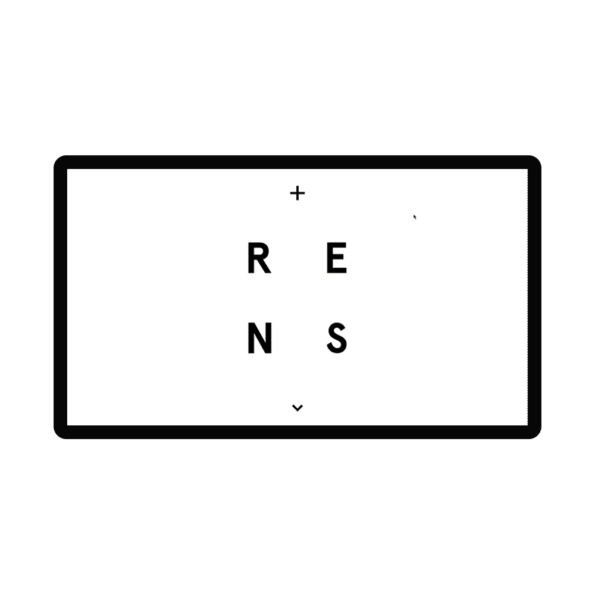
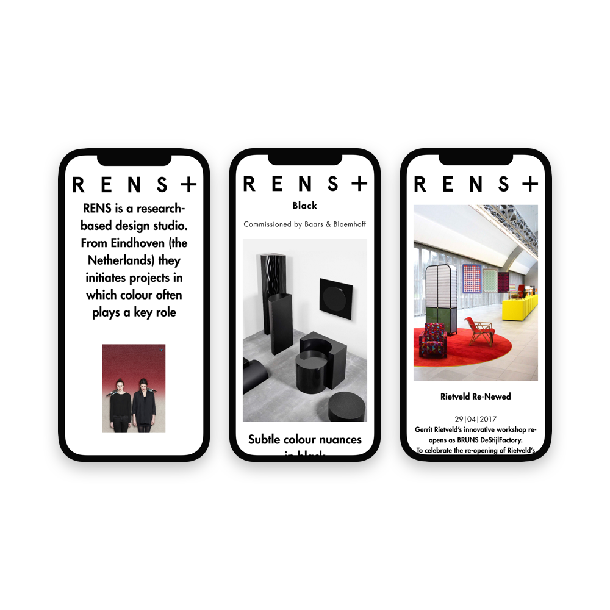
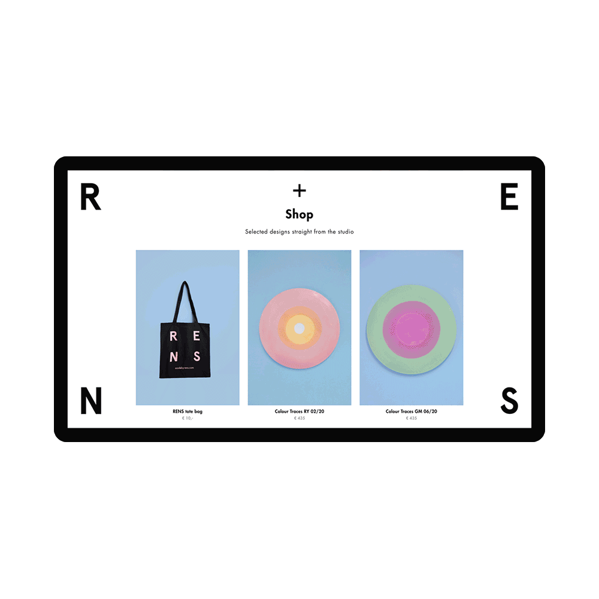

Little big details and animations where a important addition to the minimalism

Visual language defined on mobile without loss of navigation accessibility

The bold identity is consistently visible throughout the whole website
RENS is a design research studio based in Eindhoven, the Netherlands. Created the digital visual language together with Studio&. My role in this project shifted between frontend development to motion and UX design.